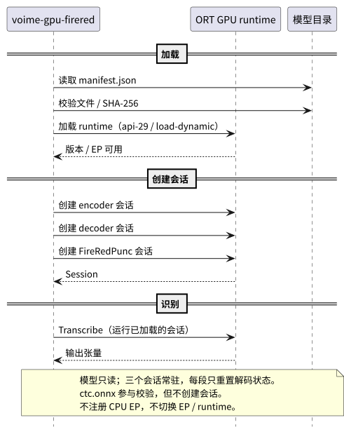

根：README USER CORE PROVIDER ｜ 本组件：README USER CORE
本文只记录 voime-gpu-firered 实际消费的外部子集：FireRedASR2-AED 与 FireRedPunc
两个 FP32 ONNX 模型，以及 ONNX Runtime 的 GPU Execution Provider。完整定义以官方文档与
模型导出包为准；产品级下边界见 根 PROVIDER。
| 术语 | 定义 |
|---|---|
| ONNX 图（graph） | 一个 .onnx 文件中的计算图；权重可以内嵌，也可以放在同名 .data 外部文件中。 |
| ONNX 会话（session） | ONNX Runtime 加载一个图后可执行推理的运行时对象；本组件创建 encoder、decoder、FireRedPunc 三个会话。 |
| 张量（tensor） | ONNX 的输入 / 输出多维数组；名称、元素类型与形状构成会话的 I/O 签名。 |
| Execution Provider（EP） | ONNX Runtime 的推理后端；本组件只使用 CUDA、MIGraphX 或 DirectML 之一，不使用 CPU EP。 |
| ORT GPU runtime | 包含 ONNX Runtime 动态库与目标 EP provider 的运行时；由安装脚本放在 worker 自己的 runtime 目录。 |
api-29 | ort crate 的 API 版本选择；与 ONNX Runtime 1.29 的 C API 对齐。 |
load-dynamic | ort 的运行时动态加载模式；worker 不在构建期链接 ORT，而是在启动时从 runtime 目录加载。 |
| FP32 | 32 位浮点；本组件的两个模型均为上游 FP32 ONNX，不回退 int8 / FP16。 |
| Kaldi fbank | Kaldi 风格梅尔滤波器组特征；80-bin、25 ms 窗、10 ms 帧移、snip_edges、16-bit 缩放。 |
| CMVN | 倒谱均值方差归一化；统计量来自 cmvn.ark，逐帧应用后再进入 encoder。 |
| Kaldi ark | Kaldi 的二进制矩阵容器；cmvn.ark 保存 80 维 CMVN 统计。 |
| AED | FireRedASR2-AED 的 attention encoder-decoder；encoder 输出帧级表示，decoder 自回归生成 token。 |
| decoder cache | decoder 每层的自注意力缓存；第一步为空，之后每一步用上一步的 new_cache_*。 |
<sos> / <eos> | AED 的特殊 token；id 3 / 4。greedy 从 <sos> 开始，遇到 <eos> 停止。 |
| greedy | 每步取 decoder logits 的 argmax；不做 beam search。 |
| CTC head | FireRedASR2-AED 的辅助 CTC 输出；ctc.onnx 存在但不加载，不作为产品路径。 |
| FireRedPunc tokenizer | BERT WordPiece 分词器；词表为 tokens.txt，中文按字符、英文按子词。 |
| 标点标签 | 5 类：<space>、，、。、？、！；由 out_dict / punc.json 固定。 |
| manifest | 模型目录的权威描述；通用 schema、字段与合法 kind 见 根 CORE §4.8，FireRed 固定值见 USER §4.1。 |
| SHA-256 | 模型文件内容摘要；启动时逐文件校验，失败不创建会话。 |
| 约定 | 内容 |
|---|---|
| 清单权威 | 模型目录、文件列表、SHA-256、精度与最长段由 manifest.json 声明；代码不硬编码可替换路径。 |
| 模型不可变 | 两个模型目录运行期只读；不下载、不转换、不量化、不改写 manifest。 |
| 张量校验 | 会话创建后校验输入 / 输出名称、元素类型与形状；与本文或 manifest 不符即 load_failed。 |
| GPU only | 只注册一个 GPU EP；不注册 CPU EP，不回退到 CPU ORT。 |
| runtime 固定 | ort 固定 default-features=false + api-29 + load-dynamic；EP feature 按平台只开一个。 |
| 动态库位置 | ORT 动态库只从 worker 自己的 runtime 目录加载；不写全局 LD_LIBRARY_PATH，不与 Qwen 共享目录。 |
| 精度固定 | 只加载 FP32 ONNX；不加载 int8 / FP16，不做运行期精度回退。 |
| fbank 固定 | Kaldi fbank 80-bin、25 / 10 ms、snip_edges、dither 0、16-bit 缩放；音频必须是 16 kHz 单声道 f32。 |
| CMVN 固定 | 从 cmvn.ark 读取 80 维统计；mean / inverse stddev 维度必须与 fbank 一致。 |
| AED 解码 | greedy；<sos> 3 开始、<eos> 4 停止；ctc.onnx 不加载。 |
| Punc 二次推理 | FireRedPunc 在 AED 文本上单独运行；标签按 tokenizer 偏移插回原文，返回前完成全部标点。 |
| Punc 分块 | 单块最多 512 个位置（含 [CLS] / [SEP]）；超长文本按 token 边界切块，块间不共享上下文。 |
| 错误映射 | Provider 错误在边界转换为 common 错误码；不新增后端私有码，不向 daemon 返回半成品文本。 |
| 运行期不联网 | 不访问网络、不下载模型、不检查更新；所有文件在安装时已就位。 |
| 日志 | 只记录路径、SHA 前缀、张量名、耗时与错误码；不记录识别文本或音频样本。 |
本组件的两张边界图分别是：daemon ↔ worker 的 Final 时序（见 USER §3） 与 worker ↔ ORT / 模型目录的加载边界（见本节）。两张图都只画跨边界调用，不展开 AED / FireRedPunc 内部阶段。

Hello 校验通过后，worker 读取两个 manifest.json 并逐文件校验 SHA-256 与大小；任一失败不加载 runtime、不发送 Ready。ctc.onnx 不创建会话。| 文件 | 作用 | 大小（bytes） |
|---|---|---|
encoder.onnx | Conformer encoder 图 | 564,553 |
encoder.data | encoder 外部权重 | 2,893,370,496 |
ctc.onnx | CTC head；存在但不加载 | 44,410,182 |
decoder.onnx | 单步 decoder 图 | 392,235 |
decoder.data | decoder 外部权重 | 1,793,474,560 |
dict.txt | 8667 个 token 的 id → token 表 | 79,172 |
train_bpe1000.model | 英文子词 SentencePiece 模型 | 251,707 |
cmvn.ark | Kaldi CMVN 统计 | 1,311 |
config.json | 维度、特殊 token id、特征与参考解码参数 | 1,203 |
manifest.json | 本产品的 schema 5 清单 | — |
encoder.onnx 4275797da7515ab7d112b684cc1a1589ccf4efdca5c8b97165e3f7b195e46e6e
encoder.data d9658f82e025b4fd44b9ad94ef10406a5919bdd006d0b7102e5193ce37ad8e6c
ctc.onnx ec3f28bd4376cfbded7319e34203b6e9f503a6c12731a15a8f485038fbfb4a75
decoder.onnx 3e426f8fa9e60242d2fa570896eae1539e8859a82d544c50fc5f3b186323bfa0
decoder.data c9a46fba63fd90dacf226169a6573b2df34c910178aff4f2a8a4d62d5fc5e6ff
dict.txt 1bc613de2112d257e61a349c3e72d1b1a9cf19c33d3ca954197ad2171e5ea07b
train_bpe1000.model 473bbc157cb4eade2059b30a3c877a1c29bd50cadbfbed869ae36eeade7fee07
cmvn.ark 6efba6105429d1630c05d818d956bfe4edfad37a04b3b27bb5a029b9adb37945
config.json 2a38d390e6bde9807466c765d012daca4d5d66d2019890dffafec95f62310e4fmanifest.json 只作为安装源；产品模型目录写入 schema 5 清单，通用字段语义与合法 kind 见 根 CORE §4.8。encoder.data 与 decoder.data 必须与对应 .onnx 同目录；不要单独移动或改名。ctc.onnx 参与文件校验，但运行期不创建会话；CTC 不作为产品路径。| 图 | 方向 | 名称 | 类型 / 形状 | 说明 |
|---|---|---|---|---|
| encoder | 输入 | input | float32[batch, frames, 80] | fbank + CMVN 后的特征。 |
| encoder | 输入 | input_lengths | int64[batch] | 有效帧数。 |
| encoder | 输出 | output | float32[batch, T, 1280] | 4 倍下采样后的帧级表示；T 约为 frames / 4。 |
| encoder | 输出 | output_lengths | int64[batch] | 有效输出帧数。 |
| encoder | 输出 | mask | float32[batch, 1, T] | decoder 的 src_mask。 |
| decoder | 输入 | ys | int64[batch, L] | 已生成 token；第一步为 <sos> 3。 |
| decoder | 输入 | encoder_output | float32[batch, T, 1280] | encoder 的 output。 |
| decoder | 输入 | src_mask | float32[batch, 1, T] | encoder 的 mask。 |
| decoder | 输入 | cache_0 … cache_15 | float32[batch, L-1, 1280] | 16 层自注意力缓存；第一步为空。 |
| decoder | 输出 | logits | float32[batch, 8667] | 最后一个位置的原始分数；greedy 直接 argmax。 |
| decoder | 输出 | new_cache_0 … new_cache_15 | float32[batch, L, 1280] | 下一步的 cache。 |
| ctc | 输入 | encoder_output | float32[batch, T, 1280] | 仅记录；本产品不加载。 |
| ctc | 输出 | log_probs | float32[batch, T, 8667] | 仅记录；id 0 为 blank。 |
frames 由段长决定。T 是 encoder 输出帧数；每帧约 40 ms，最大 5000 帧（上游约 200 s）。本产品段长上限 30 s。logits 未做 softmax；greedy 只需 argmax，不改变结果。ys 随生成逐步增长，cache 同步更新。| 项目 | 契约 |
|---|---|
| 词表 | dict.txt 每行 token id，共 8667 项；id 0 <blank>、1 <unk>、2 <pad>、3 <sos>、4 <eos>。 |
| 英文子词 | train_bpe1000.model 为 SentencePiece 模型；以 ▁ 开头的 piece 表示词首，还原为空格边界。 |
| 中文 | 词表中的中文字符直接拼接，不额外加空格。 |
| 特殊 token | 解码输出去掉 <blank> / <unk> / <pad> / <sos> / <eos>；空文本按空段处理。 |
| 解码策略 | 产品固定 greedy；config.json 的 reference_decoding（beam 3 / smoothing 1.25 / length penalty 0.6）只作上游参考，不进入运行期。 |
| 最长输出 | config.json 的 output_length_max 为 300；产品段长上限 30 s，超过时由核心分段器切分。 |
| 项目 | 契约 |
|---|---|
| 输入 | 16 kHz、单声道、f32 样本；计算前乘 32768（16-bit 缩放）。 |
| fbank | Kaldi fbank，80 mel bins，25 ms 窗、10 ms 帧移，snip_edges=true，dither 0，low freq 20，high freq 0，use_power / use_log_fbank。 |
| CMVN | cmvn.ark 提供 80 维统计；按 Kaldi 约定计算 mean 与 inverse stddev，逐帧做 (x - mean) * inv_stddev。 |
| 顺序 | fbank → CMVN → encoder；不做 LFR、不加语言 token、不做频谱增强。 |
| 段长 | 产品上限 30 s；上游 input_length_max 为 60 s，超过 60 s 可能产生幻觉，本产品不触发该边界。 |
来源为 ModelScope 的 manyeyes/FireRedPunc-zh-en-onnx FP32 ONNX 导出；上游为 FireRedTeam 的 FireRedPunc（BERT / LERT 5 类标点模型，Apache-2.0）。 模型约 407 MB，opset 14，输入只包含 token id 与长度。
| 文件 | 作用 | 大小（bytes） |
|---|---|---|
model.onnx | 5 类标点 token 分类图 | 407,027,716 |
tokens.txt | 21128 项 BERT WordPiece 词表 | 109,540 |
out_dict | 5 类标签的 label → id 表（每行 label id） | 33 |
punc.json | 预处理 / 标签配置；punc_list 为 <space>、，、。、？、！ | 380 |
manifest.json | 本产品的 schema 5 清单 | — |
model.onnx fbcb4dd1e54f07bf770672a9691fb54af41774a130e878e25d105f2f5ba31fde
tokens.txt 45bbac6b341c319adc98a532532882e91a9cefc0329aa57bac9ae761c27b291c
out_dict 6f0f7e0004881d617bc6e1d7b5b39972da80dcb49576bca489b1603ee55e20bb
punc.json e3cae8dd92ea6cfc52b713238977412e4b7a47aa9b9ae4eaa94156e0984fcb21punc.json 把标点定义为 5 类；本产品不在运行期训练、转换或重新量化。out_dict 与 punc.json 的标签必须一致；类别数小于标签表时拒绝加载。| 方向 | 名称 | 类型 / 形状 | 说明 |
|---|---|---|---|
| 输入 | input_ids | int64[batch_size, seq_len] | WordPiece token id；含 [CLS] / [SEP]。 |
| 输入 | lengths | int64[batch_size] | 每条样本的有效 token 数；本导出不接收 attention_mask / token_type_ids。 |
| 输出 | logits | float32[batch_size, seq_len, 5] | 逐 token 的 5 类分数；argmax 得到标点标签。 |
load_failed。lengths 是有效长度，不是 attention mask 张量；不要按 BERT 习惯额外构造 attention_mask。seq_len 最大 512（含特殊 token）。| 项目 | 契约 |
|---|---|
| 词表 | tokens.txt 为 BERT WordPiece 词表，21128 项；[PAD] 0、[UNK] 100、[CLS] 101、[SEP] 102、[MASK] 103。 |
| 分词 | 中文按字符，英文按 WordPiece 子词；返回每个 token 在原文字符串中的起始 / 结束偏移。 |
| 最大长度 | 单块 512 个位置（含 [CLS] / [SEP]）；超长文本按 token 边界切块，块间不共享上下文。 |
| 标签 | out_dict 每行 label id，共 5 项；punc.json 的 punc_list 固定为 <space>、，、。、？、！。 |
| 插入 | label 0 不插入；label 1–4 在对应 token 结束位置插入标点。中文用全角，英文上下文用半角，不改变其它字符。 |
| 空文本 | 不调用 Punc；返回空文本，由 daemon 按空段丢弃。 |
punc.json 的 ignore_id 是训练配置；推理时 label 0 表示不插入，不改变标签表。| EP | 平台 | 依赖 | 失败映射 |
|---|---|---|---|
| CUDA Execution Provider | Linux / Windows + NVIDIA | 匹配的 NVIDIA 驱动与 CUDA 能力；runtime 由安装脚本准备。 | runtime_missing / device_unavailable |
| MIGraphX Execution Provider | Linux + AMD | MIGraphX / ROCm 运行时与设备；AMD Linux 的验收基线。 | runtime_missing / device_unavailable |
| DirectML Execution Provider | Windows + AMD / Intel | DirectML 运行时；只随 Windows FireRed 包提供。 | device_unavailable |
| CPU Execution Provider | — | 不注册；worker 没有 CPU 推理路径。 | — |
| 项目 | 契约 |
|---|---|
ort features | default-features=false、api-29、load-dynamic，再加一个平台 EP feature；不启用多个 EP。 |
| API 版本 | 固定 api-29；加载的 ORT 动态库必须与 1.29 的 C API 兼容。 |
| 动态加载 | 启动时从 worker 自己的 runtime 目录加载 ORT 动态库；不依赖构建期链接或全局库搜索路径。 |
| Environment | 进程级单例；创建一次，所有会话共享。设备来自 Hello.device，不支持的设备返回 device_unavailable。目标 EP 注册失败即失败，不尝试第二个 EP。 |
| 会话 | encoder、decoder、FireRedPunc 三个会话；ctc.onnx 不创建会话。 |
| 版本 / provider 校验 | 启动时检查 ORT 版本兼容性与目标 EP 是否在可用 provider 列表；缺失即 runtime_missing / device_unavailable。 |
| 运行期 | 不切换 EP / runtime，不重新加载动态库，不降级到 CPU ORT。 |
Ready；运行期推理失败返回 inference_failed，由 daemon 决定重启与回退。| 阶段 | 触发条件 | common 错误码 | worker 行为 |
|---|---|---|---|
| 加载 runtime | ORT 动态库缺失、无法加载或 API 版本不匹配。 | runtime_missing | 不创建会话，不发送 Ready；返回 Error 后退出并记录路径。 |
| 加载 runtime | 目标 EP 未注册、无可用 GPU、驱动不匹配或显存不足。 | device_unavailable | 不创建会话，不发送 Ready；返回 Error 后退出。 |
| 加载模型 | manifest 缺失、schema / id / kind 不符、文件缺失、大小或 SHA-256 不符。 | load_failed | 不创建会话，不发送 Ready；返回带路径与 SHA 前缀的 Error 后退出。 |
| 创建会话 | ONNX 张量名称 / 类型 / 形状不符，或 ORT 会话创建失败。 | load_failed | 释放已建会话，不发送 Ready；返回 Error 后退出。 |
| 推理 | ORT run 失败、输出形状异常或文本还原失败。 | inference_failed | 返回 Error；不返回半成品文本；由 daemon 重启 / 回退。 |
| 超时 | daemon 的加载或识别预算耗尽。 | timeout | 进程被终止，不发送响应；daemon 走崩溃路径。 |
| 握手 | worker 与 daemon 协议版本不一致。 | protocol_mismatch | daemon 拒绝 worker；worker 不进入 Transcribe。 |